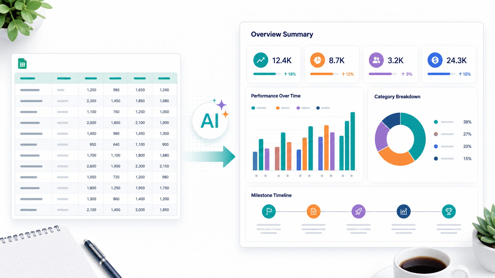

Промтзилла
Инфографика работает, когда данные не просто красиво оформлены, а помогают быстро понять главный вывод.

Пошаговая инструкция
- 1Подготовь таблицу или список фактов без лишних колонок.
- 2Сформулируй главный вывод, который должна донести инфографика.
- 3Попроси ИИ выбрать типы графиков: столбцы, круг, таймлайн, карточки чисел.
- 4Сначала сгенерируй текстовую структуру, затем визуальный макет.
- 5Проверь цифры и подписи: в инфографике ошибка заметнее, чем в обычном тексте.
Какой результат просить
Лучше просить не «сделай красиво», а указать аудиторию, главный вывод и формат публикации: статья, соцсети, презентация или отчёт. Для такого сценария можно использовать Study24 AI: загрузи исходные материалы, вставь промт и попроси несколько вариантов.
Промт
RU
Сделай инфографику из этих данных. Данные: [вставь таблицу, цифры или список фактов] Цель инфографики: [какой главный вывод нужно показать] Требования: — выдели главный вывод; — выбери подходящие типы визуализации для разных данных; — не перегружай макет текстом; — используй короткие подписи и понятные заголовки; — сделай структуру: заголовок, ключевые цифры, графики, пояснения, финальный вывод; — предложи цветовую палитру и композицию. Если данных недостаточно или они противоречат друг другу, сначала укажи проблему, а потом предложи аккуратный вариант инфографики.
EN
Create an infographic from this data. Data: [paste table, numbers, or facts] Infographic goal: [what main insight should be shown] Requirements: — highlight the main takeaway; — choose suitable visualization types for different data points; — do not overload the layout with text; — use short labels and clear headings; — structure it as: title, key numbers, charts, explanations, final takeaway; — suggest a color palette and composition. If the data is incomplete or contradictory, point out the issue first and then propose a careful infographic version.
Важно
Перед публикацией сверь все числа с источником. Особенно внимательно проверяй проценты, суммы и подписи к графикам.
Теги